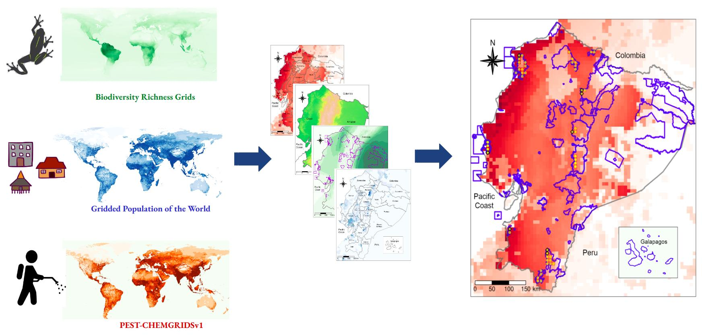

My research applies planetary health lenses and systems thinking to conceptualizing multi-methods empirical studies at global, national, and local scales, in order to examine the impacts of globalized contamination on health
equity and ecosystem integrity. My interdisciplinary research program following three main streams:
Globalized food systems contamination and planetary health,
Environmental health and infectious diseases,
built environments, health equity, and environmental justice
Globalized food systems contamination and planetary health
Aliquam massa urna, imperdiet sit amet mi non, bibendum euismod est. Curabitur mi justo, tincidunt vel eros ullamcorper, porta cursus justo. Cras vel neque eros. Vestibulum diam quam, mollis at magna consectetur non, malesuada quis augue. Morbi tincidunt pretium interdum est. Curabitur mi justo, tincidunt vel eros ullamcorper, porta cursus justo. Cras vel neque eros. Vestibulum diam cubilia adipiscing interdum aliquet aliquet placerat cubilia accumsan cep ante nullam adipiscing tortor odio. Iaculis adipiscing accumsan nascetur in cras. Lacinia placerat.
Vestibulum diam quam, mollis at consectetur non, malesuada quis augue. Morbi tincidunt pretium interdum. Morbi mattis elementum orci, nec dictum porta cursus justo. Quisque ultricies lorem in ligula condimentum, et egestas turpis sagittis. Cras ac nunc urna. Nullam eget lobortis purus. Phasellus vitae tortor non est placerat tristique faucibus magna adipiscing aliquet blandit nisi dolor accumsan nascetur lorem. Vis enim. Curae. Mi arcu vis aliquam ipsum non accumsan ac mi faucibus amet eu accumsan erat interdum semper accumsan. Eu sagittis tellus accumsan neque lorem penatibus in porttitor. Vivamus commodo curae. Condimentum lobortis praesent id ac lorem. Lorem vis ipsum dolor feugiat consequat dolore adipiscing.
Environmental health and infectious diseases

Aliquam massa urna, imperdiet sit amet mi non, bibendum euismod est. Curabitur mi justo, tincidunt vel eros ullamcorper, porta cursus justo. Cras vel neque eros. Vestibulum diam quam, mollis at magna consectetur non, malesuada quis augue. Morbi tincidunt pretium interdum est. Curabitur mi justo, tincidunt vel eros ullamcorper, porta cursus justo. Cras vel neque eros. Vestibulum diam cubilia adipiscing interdum aliquet aliquet placerat cubilia accumsan cep ante nullam adipiscing tortor odio. Iaculis adipiscing accumsan nascetur in cras. Lacinia placerat.
Vestibulum diam quam, mollis at consectetur non, malesuada quis augue. Morbi tincidunt pretium interdum. Morbi mattis elementum orci, nec dictum porta cursus justo. Quisque ultricies lorem in ligula condimentum, et egestas turpis sagittis. Cras ac nunc urna. Nullam eget lobortis purus. Phasellus vitae tortor non est placerat tristique faucibus magna adipiscing aliquet blandit nisi dolor accumsan nascetur lorem. Vis enim. Curae. Mi arcu vis aliquam ipsum non accumsan ac mi faucibus amet eu accumsan erat interdum semper accumsan. Eu sagittis tellus accumsan neque lorem penatibus in porttitor. Vivamus commodo curae. Condimentum lobortis praesent id ac lorem. Lorem vis ipsum dolor feugiat consequat dolore adipiscing.
Built environments, health equity, and environmental justice

Aliquam massa urna, imperdiet sit amet mi non, bibendum euismod est. Curabitur mi justo, tincidunt vel eros ullamcorper, porta cursus justo. Cras vel neque eros. Vestibulum diam quam, mollis at magna consectetur non, malesuada quis augue. Morbi tincidunt pretium interdum est. Curabitur mi justo, tincidunt vel eros ullamcorper, porta cursus justo. Cras vel neque eros. Vestibulum diam cubilia adipiscing interdum aliquet aliquet placerat cubilia accumsan cep ante nullam adipiscing tortor odio. Iaculis adipiscing accumsan nascetur in cras. Lacinia placerat.
Vestibulum diam quam, mollis at consectetur non, malesuada quis augue. Morbi tincidunt pretium interdum. Morbi mattis elementum orci, nec dictum porta cursus justo. Quisque ultricies lorem in ligula condimentum, et egestas turpis sagittis. Cras ac nunc urna. Nullam eget lobortis purus. Phasellus vitae tortor non est placerat tristique faucibus magna adipiscing aliquet blandit nisi dolor accumsan nascetur lorem. Vis enim. Curae. Mi arcu vis aliquam ipsum non accumsan ac mi faucibus amet eu accumsan erat interdum semper accumsan. Eu sagittis tellus accumsan neque lorem penatibus in porttitor. Vivamus commodo curae. Condimentum lobortis praesent id ac lorem. Lorem vis ipsum dolor feugiat consequat dolore adipiscing.